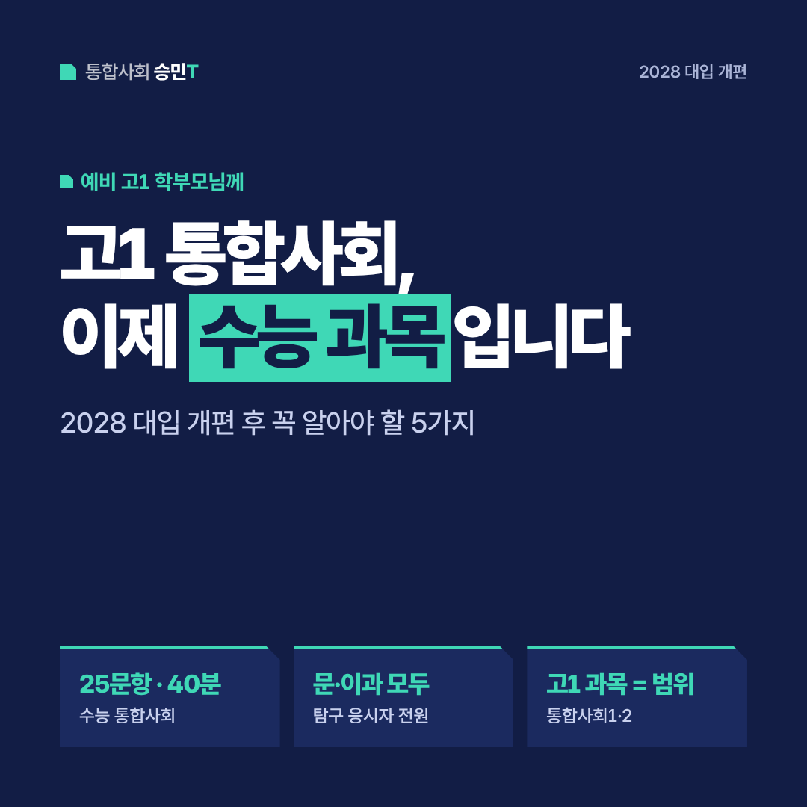
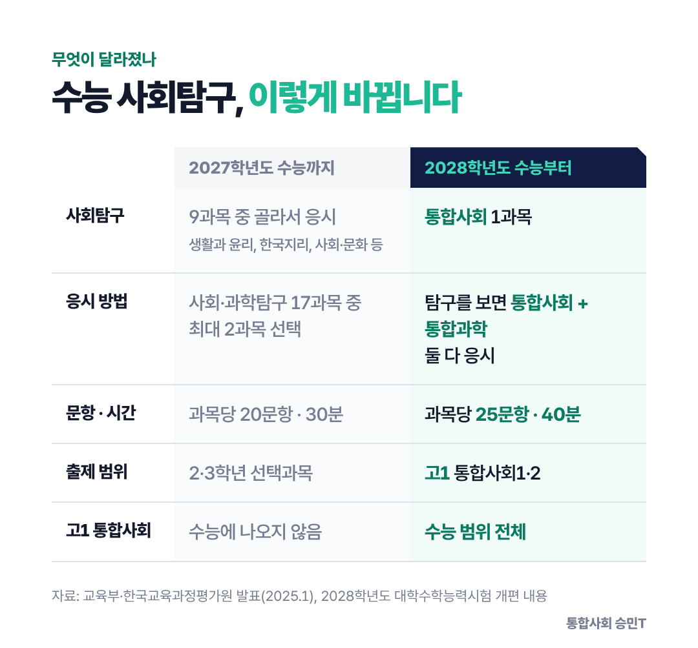
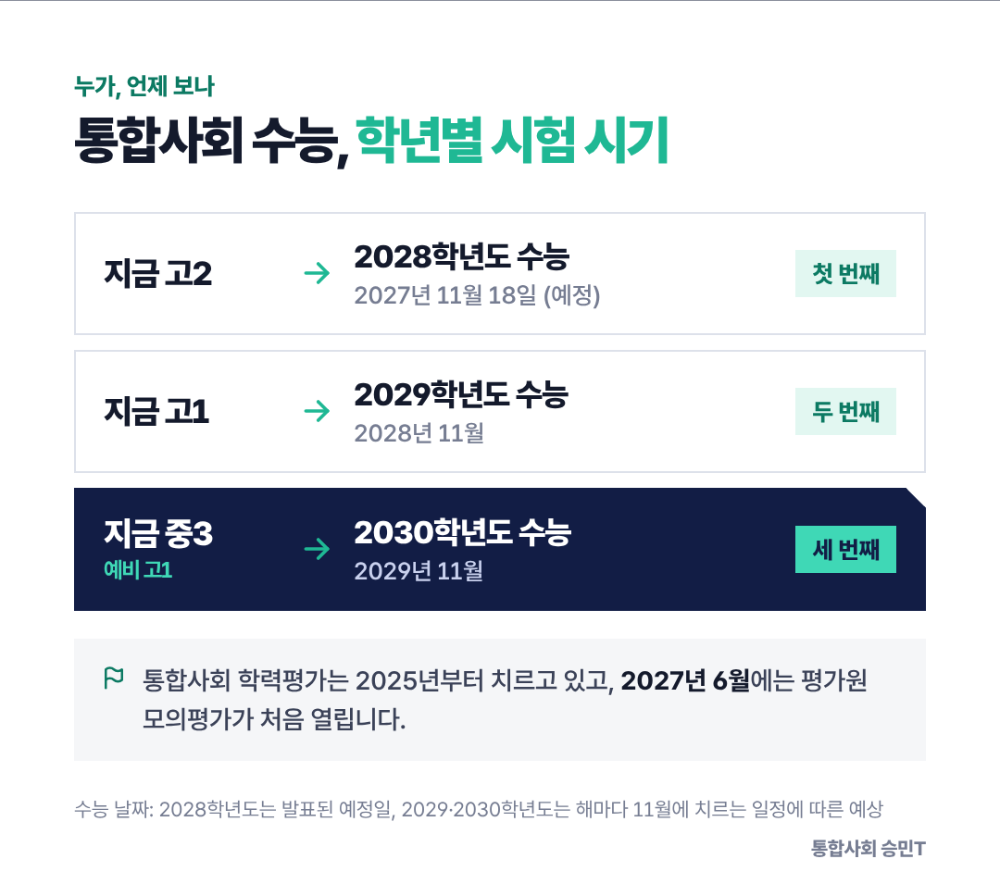
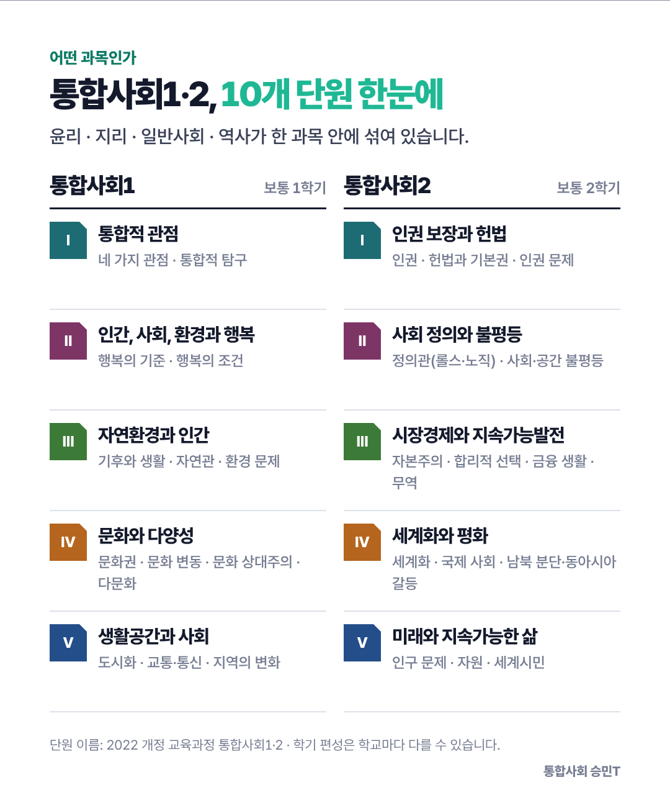
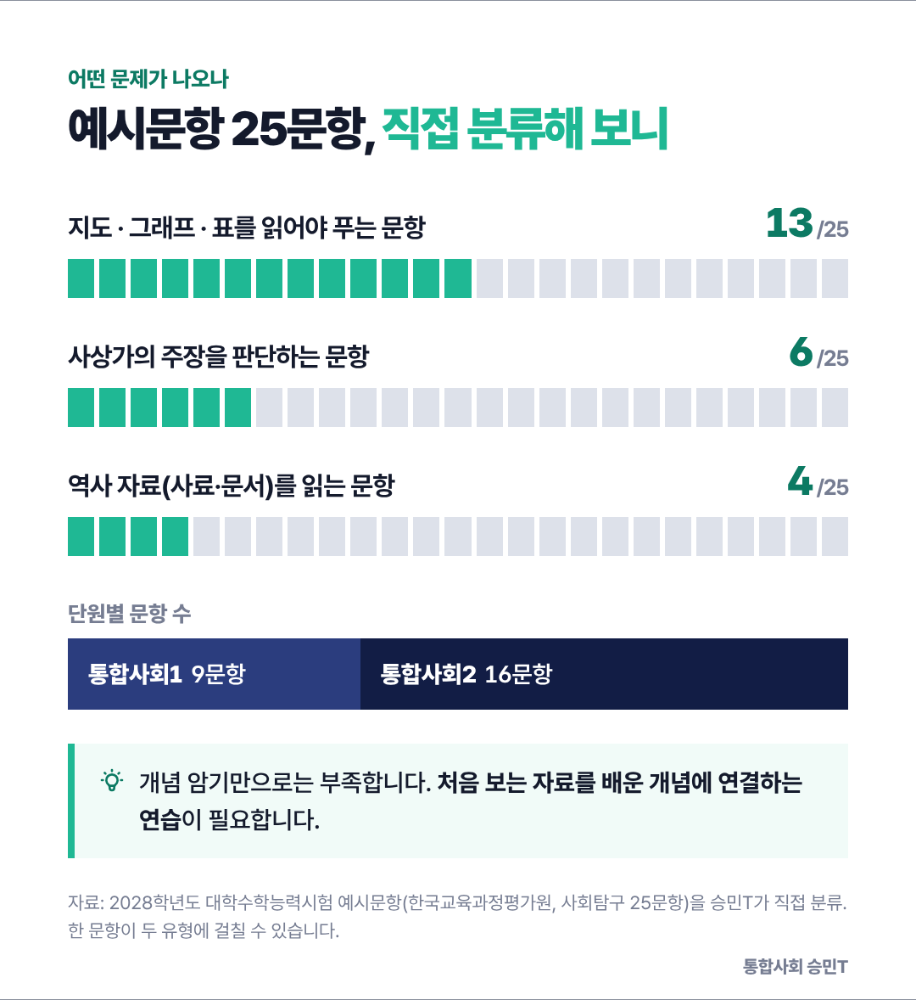

안녕하세요, 통합사회 승민T입니다.
겨울방학을 앞두고 "고등학교 통합사회는 뭐가 달라졌나요?"라는 질문을 많이 받습니다. 결론부터 말씀드리면 세 가지입니다.
① 고1 때 배우는 통합사회1·2가 그대로 수능 범위가 됩니다.
② 탐구 영역을 보는 학생은 문과·이과 구분 없이 모두 통합사회를 봅니다.
③ 수능 통합사회는 25문항·40분이고, 예시문항 25문항 중 13문항이 지도·그래프·표를 읽어야 풀립니다.
하나씩 자세히 설명드리겠습니다.
2027학년도 수능까지 사회탐구는 생활과 윤리, 한국지리, 사회·문화 같은 과목 가운데 골라서 보는 시험이었습니다. 사회·과학탐구 17과목 가운데 최대 2과목을 고르고, 과목당 20문항을 30분 동안 풀었습니다. 고1 때 배우는 통합사회는 수능에 나오지 않았습니다.
2028학년도 수능부터는 선택과목이 없어집니다. 사회탐구는 '통합사회', 과학탐구는 '통합과학' 한 과목씩이고, 탐구 영역을 보는 학생은 두 과목을 모두 봅니다. 문항 수는 과목당 25문항, 시험 시간은 40분으로 늘었습니다(교육부·한국교육과정평가원, 2025년 1월 발표).

통합사회 수능을 처음 보는 학생은 지금의 고2입니다. 2027년 11월 18일(예정)에 치르는 2028학년도 수능이 첫 통합사회 수능입니다. 지금 고1이 두 번째, 지금 중학교 3학년인 예비 고1이 세 번째로 이 시험을 봅니다.
세 번째라서 좋은 점도 있습니다. 통합사회 학력평가는 2025년부터 치르고 있고, 2027년 6월에는 평가원 모의평가가 처음 열립니다. 예비 고1 학생들은 앞선 두 학년의 실제 시험을 보면서 준비할 수 있습니다.

통합사회1·2는 고1이 배우는 공통과목입니다. 보통 1학기에 통합사회1, 2학기에 통합사회2를 배웁니다(학교마다 편성은 다를 수 있습니다). 고1 내신은 5등급 상대평가로, 1등급은 상위 10%입니다.
예전에는 고1 통합사회 성적이 내신에만 쓰였다면, 이제는 고1 때 배운 내용이 고3 수능까지 그대로 이어집니다. 그런데 2·3학년에는 학교에서 선택과목을 배우기 때문에, 고3이 되어 학교에서 통합사회를 처음부터 다시 배우기는 어렵습니다. 고1 때 만든 개념 정리가 고3까지 가져가는 '나만의 교과서'가 되어야 하는 이유입니다.
윤리, 지리, 일반사회(정치·법·경제·사회·문화), 역사가 한 과목 안에 섞여 있습니다. 통합사회1은 '통합적 관점'부터 '생활공간과 사회'까지 5단원, 통합사회2는 '인권 보장과 헌법'부터 '미래와 지속가능한 삶'까지 5단원입니다.

한 단원 안에서도 여러 분야가 함께 나옵니다. 예를 들어 '사회 정의와 불평등' 단원에서는 롤스·노직 같은 사상가의 정의관(윤리), 지역 사이의 불평등(지리), 불평등을 줄이는 제도(일반사회)를 함께 배웁니다.
한국교육과정평가원이 공개한 2028학년도 수능 예시문항 25문항을 하나씩 분류해 보면 특징이 뚜렷합니다.
· 25문항 중 13문항이 지도·그래프·표를 읽어야 풀립니다.
· 사상가의 주장을 읽고 판단하는 문항이 6문항입니다(롤스, 노직, 칸트, 갈퉁 등).
· 권리 장전, 남북 공동 선언 같은 역사 자료를 읽는 문항이 4문항입니다.
· 예시문항에서는 통합사회1에서 9문항, 통합사회2에서 16문항이 나왔습니다.
· 금융 상품과 기회비용처럼 두 단원을 한 문제에 묶은 문항이 많습니다.

개념을 외우는 것만으로는 부족하고, 처음 보는 자료를 배운 개념에 연결하는 연습이 꼭 필요하다는 뜻입니다.
① 개념은 '질문'으로 정리합니다. 첫 단원에서 배우는 네 가지 관점도 "언제부터?(시간적)", "어디에서?(공간적)", "어떤 제도가?(사회적)", "바람직한가?(윤리적)"라는 질문 하나로 기억하면 처음 보는 문제에도 바로 쓸 수 있습니다.
② 지도·그래프는 매주 조금씩 봅니다. 기후 그래프나 인구 피라미드는 몰아서 보면 금방 잊습니다.
③ 사상가는 '짝'으로 외웁니다. 롤스와 노직, 칸트와 벤담처럼 짝을 지어 차이를 정리하면 오답 선지가 보입니다.
④ 틀린 문제는 이유를 한 줄로 적습니다. "왜 틀렸는지"가 남아야 같은 함정에 다시 빠지지 않습니다.
(예: 수업에서 고1 학생들이 가장 많이 헷갈려하는 부분, 수업에서 꼭 강조하는 것)
통합사회는 새로 생긴 수능 과목이라 학생도 학부모님도 정보가 부족한 과목입니다. 이 블로그에는 앞으로 2028 수능 통합사회 소식과 시험 분석, 단원별 개념 한 장 정리, 시험 기간 공부법을 꾸준히 올리겠습니다. 저는 직접 만든 개념서와 문제집으로 수업하고 있습니다.
다음 글에서는 통합사회 첫 단원인 '네 가지 관점'을 한 번에 정리해 드리겠습니다.